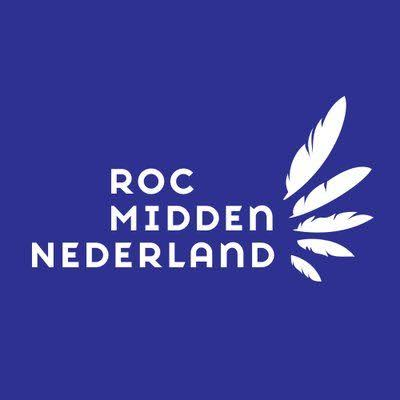
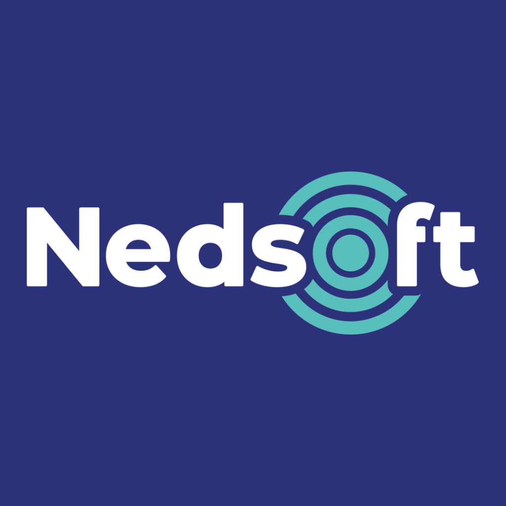
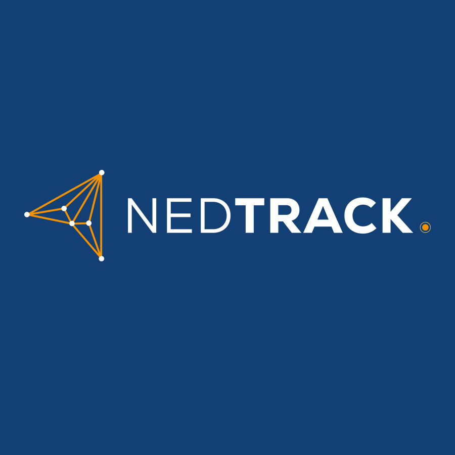

Damian van Loon
Helpdeskmedewerker en IT-engineer in wording met een passie voor Linux, Docker, netwerken en smart home automatisering. Bouwt en beheert een homelab om enterprise-technologieën in de praktijk te testen.
Netwerk Architectuur
Klik op een element in het schema om de details en actieve services op dat apparaat te bekijken.
Geen element geselecteerd
Klik op een van de servers of netwerkcomponenten in de tekening om specificaties, IP-adressen en draaiende services te zien.
Homelab Projecten
Een overzicht van concrete systemen en infrastructuren die ik zelfstandig heb ontworpen, gebouwd en onderhouden.
Homelab
Een volledig geautomatiseerde download- en mediapipeline verdeeld over de Raspberry Pi 5 en Proxmox.
Het Probleem
Het handmatig downloaden en organiseren van media is tijdrovend. Dit moet centraal en veilig gebeuren zonder handmatige interventie.
De Oplossing
Opslag & downloaders (qBittorrent via VPN, SabNZB) op de Pi 5 (SambaNAS). Automatisering (Sonarr/Radarr) op Proxmox communiceren via API's en netwerkshares.
Geleerde Lessen
Multi-node API-integratie, container routing via VPN sidecars, en het mounten van gedeelde SMB/NFS netwerkmappen met PUID/PGID rechten.
Lokale Privacy-Vriendelijke Spraakassistent
Een volledig lokaal draaiende spraakassistent die is geïntegreerd met Home Assistant, zonder cloud-afhankelijkheid.
Het Probleem
Commerciële spraakassistenten sturen audiogegevens naar cloudservers, wat privacyrisico's oplevert en cloud-afhankelijkheid creëert.
De Oplossing
Een op maat gebouwde assistant met een ReSpeaker Lite (ESP32-S3) in een zelf-geprinte akoestische behuizing. Communiceert lokaal via Wyoming (Whisper & Piper).
Geleerde Lessen
Signaalverwerking en akoestische demping, microcontrollers configureren met ESPHome, en lokale AI-modellen optimaliseren op latency.
3D-Geprinte Mini Arcade Machine
Een zelfgebouwde bartop arcade machine aangedreven door een Raspberry Pi met Batocera en premium Sanwa arcade-besturing.
Het Concept
Een compact tafelmodel arcadekast, geprint in PLA, uitgerust met een authentiek 4:3 LCD-scherm, geïntegreerd 2.1-geluid en sfeervolle LED-verlichting.
De Elektronica
Raspberry Pi 4B, Zero Delay USB encoder, audioversterker met actieve subwoofer en een dual-voedingssysteem voor stabiele stroomvoorziening.
Het Bouwproces
Klik op deze kaart om de volledige handleiding en stap-voor-stap foto's van de fysieke montage en bedrading te bekijken.
Vaardigheden & Loopbaan
Een overzicht van mijn technische vaardigheden, professionele achtergrond en studie.
Kernvaardigheden
Besturingssystemen
- Linux (Ubuntu Server, Debian)
- Windows Server & Client
- ESPHome / Embedded firmware
Netwerken & Security
- TCP/IP, IP-adressering & Subnetting
- DHCP & DNS (Dual Pi-hole setup)
- VPN (Tailscale / WireGuard)
- Nginx Proxy Manager proxying
Virtualisatie & Containers
- Docker & Docker Compose
- Portainer containerbeheer
- Proxmox VE (LXC & VM)
Automatisering & Tools
- YAML (Home Assistant & Dashboards)
- Bash scripting & Linux CLI
- Uptime Kuma cross-monitoring
Werkervaring & Opleiding

Mbo ICT System Engineer (Niveau 4)
ROC Midden Nederland (BBL)Versnelde Leerweg: Vanwege inzet en goede resultaten ben ik na een half jaar in het eerste jaar direct overgezet naar het tweede leerjaar. Hiermee sla ik een heel studiejaar over en behaal ik mijn diploma in twee jaar in plaats van drie.



Helpdeskmedewerker (Fulltime)
Nedsoft B.V. / Loca / NedtrackVerantwoordelijk voor klantenondersteuning en troubleshooting (1e en 2e lijns support) voor GPS-tracking hardware en rittenregistratiesoftware. Analyseren van data, oplossen van connectiviteitsproblemen en bijdragen aan productverbetering op basis van feedback van gebruikers.

Mbo Medewerker Beheer ICT (Niveau 3)
ROC Da Vinci College